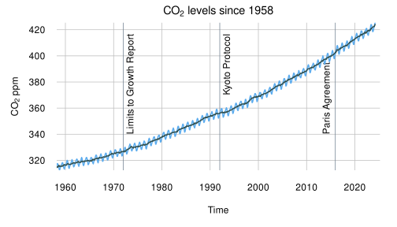

The reality of the climate crisis is too absent from our everyday life, work and decision making at all levels. Despite increasing appearance in the news, and suggestions to make small changes to help, time is running out. Easier changes were possible decades ago, now the significant cuts to CO2 emissions will not be achieved while carrying on as usual, but through drastic societal changes. This starts with recognizing the necessity, acknowledging the climate crisis, and contextualizing our everyday decisions and future planning within a world that must be different than today.
This site aims to facilitate the presentation of statements that recognize the current situation, in order to raise awareness to others and remind ourselves when making decisions. These statements can be presented at the beginning of presentations, speeches, and meetings, unrelated directly to the climate crisis.
This acknowledgement of our global crisis will hopefully help us make better collective decisions, that do not exacerbate the problem further, while planning for a likely future rather than our ephemeral present.
Using Acknowledgements
Simply copy one of the acknowledgements below into the start of a presentation, read it out or present however you like. These acknowledgements are examples stating our existing situation, feel free to use them as guides for your own acknowledgement of the climate crisis.
Click the fullscreen icon next to any acknowledgement to simply display this page, with just the statement visible, at the start of your presentation or meeting.
Acknowledgement statements
English
I/we acknowledge that we are in an existential human-induced climate crisis caused by excessive CO2 emissions from a variety of human activities.
While I/we recognize that our day-to-day transportation, energy use, materialistic consumption, animal-based diets and excessive flying impact the climate crisis, individual mitigation alone is no substitute for policy reform.
I/we acknowledge that the path to resolving this crisis requires systemic societal and structural change supported by strong political intervention rather than individual actions, technological innovation or investment alone.
I/we acknowledge that we have less than a decade to drastically reduce CO2 emissions to prevent irreparable damage to our quality of life, well-being and the diversity of nature.
— Acknowledgment provided by acknowledge-the-climate-crisis.org
People are suffering. People are dying. Entire ecosystems are collapsing. We are in the beginning of a mass extinction, and all you can talk about is money and fairy tales of eternal economic growth.
For more than 30 years, the science has been crystal clear. How dare you continue to look away and come here saying that you're doing enough, when the politics and solutions needed are still nowhere in sight.
How dare you pretend that this can be solved with just 'business as usual' and some technical solutions? With today's emissions levels, th[e] remaining CO2 budget will be entirely gone within less than 8 1/2 years.
There will not be any solutions or plans presented in line with these figures here today, because these numbers are too uncomfortable. And you are still not mature enough to tell it like it is.
— Acknowledgment sourced from extracts of Greta Thunberg's UN speech (Sept. 23, 2019). See full transcript on NPR.
Español
Próximamente
Français
Je reconnais/nous reconnaissons que nous traversons une crise climatique existentielle d'origine humaine causée par des émissions excessives de CO2 provenant de diverses activités humaines.
Je reconnais/nous reconnaissons que nos transports quotidiens, notre utilisation de l'énergie, notre consommation matérialiste, nos régimes alimentaires à base d'animaux et nos vols aérien excessifs ont un impact sur la crise climatique, dont l'atténuation individuelle seule ne peut remplacer une réforme des politiques.
Je reconnais/nous reconnaissons que la voie de la résolution de cette crise demande un changement systémique sociétal et structurel soutenu par une intervention politique forte plutôt que par des actions individuelles, des innovations technologiques ou des investissements seuls.
Je reconnais/nous reconnaissons qu'il nous reste moins d'une décennie pour réduire radicalement les émissions de CO2 afin d'éviter des dommages irréparables à notre qualité de vie, à notre bien-être et à la diversité de la nature.
— Reconnaissance fournie par acknowledge-the-climate-crisis.org
Figures
Data source: CSIRO (Commonwealth Scientific and Industrial Research Organisation). 2017 update to data originally published in: Church, J.A., and N.J. White. 2011. Sea-level rise from the late 19th to the early 21st century. Surv. Geophys. 32:585–602. Accessed April 2024. www.cmar.csiro.au/sealevel/sl_data_cmar.html. NOAA (National Oceanic and Atmospheric Administration). 2022. Laboratory for Satellite Altimetry: Sea level rise. Accessed April 2024. www.star.nesdis.noaa.gov/sod/lsa/SeaLevelRise/LSA_SLR_timeseries_global.php.

Data source: Satellite observations. Credit: NSIDC/NASA.
Data source: NASA's Goddard Institute for Space Studies (GISS). Credit: NASA/GISS.

Data source: NOAA National Centers for Environmental information, Climate at a Glance: Global Time Series, published April 2024, retrieved on April 19, 2024 from https://www.ncei.noaa.gov/access/monitoring/climate-at-a-glance/global/time-series
Data source: NOAA OISST v2.1 and Climate Reanalyzer (2024). Daily Sea Surface Temperature. Climate Change Institute, University of Maine. Retrieved on April 19, 2024 from https://climatereanalyzer.org/clim/sst_daily/

Data source: Dr. Pieter Tans, NOAA/ESRL (www.esrl.noaa.gov/gmd/ccgg/trends/) and Dr. Ralph Keeling, Scripps Institution of Oceanography (scrippsco2.ucsd.edu/).